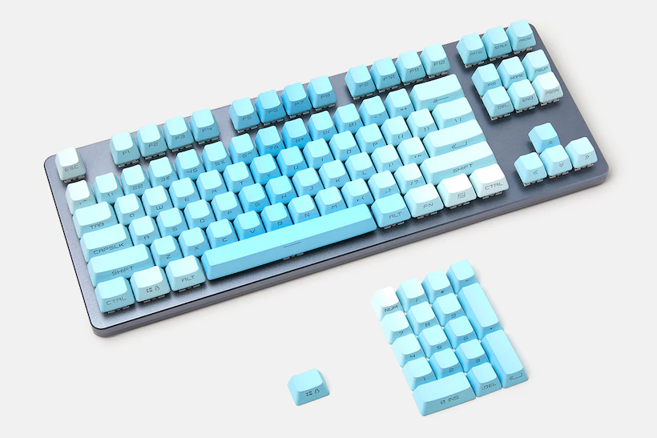
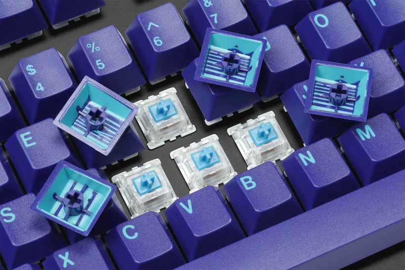
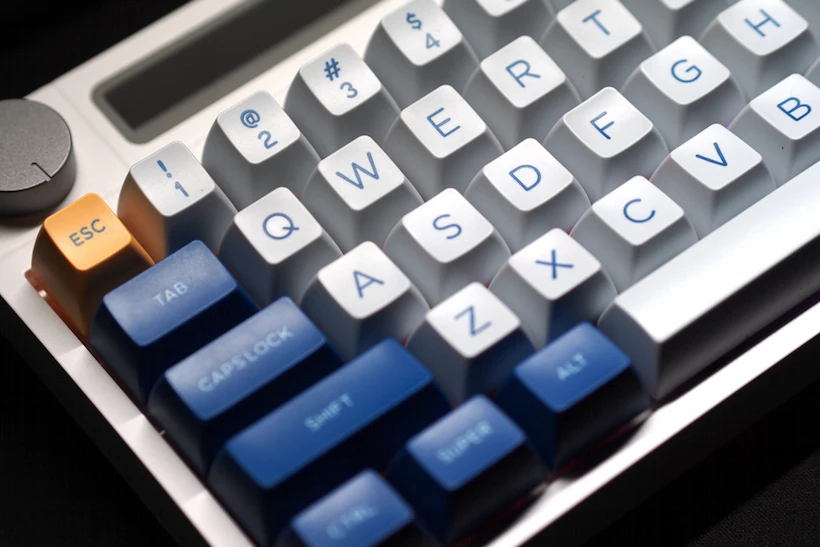
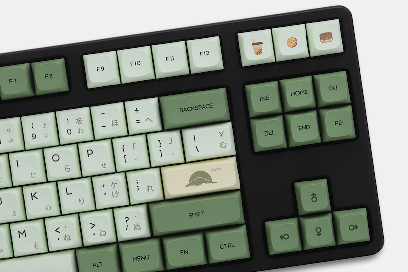

Elevate your Typing Experience
Effortlessly navigate through our keycap collection
We bring you a curated and fine collection of keycaps that will transform your keyboard into a masterpiece. Whether you are looking for durability, aesthetics, or uniqueness, we have the perfect keycaps for you. Our keycaps are made from high-quality materials such as PBT, ABS, and ceramic, and they come in various shapes, sizes, colors, and designs.
You can choose from our wide range of options or customize your own keycaps to suit your preferences and needs. No matter what kind of keyboard you have, we have the keycaps that will make it shine. Browse our collection today and find the keycaps that will elevate your typing experience.
Types of Keycaps to Choose From
TESTING
OEM Keycaps:
These are the standard keycaps that come with most mechanical keyboards. They are usually made of ABS plastic, which is smooth and shiny, but can wear out over time. They have a medium height and a slight curve on the top surface. They are compatible with most keyboards and switches.
Cherry Keycaps:
These are similar to OEM keycaps, but slightly lower and flatter. They are named after Cherry MX switches, which are the most common type of mechanical switches. They are also made of ABS plastic, but some versions are made of PBT plastic, which is more durable and resistant to shine. They have a simple and elegant look that suits many keyboards.
SA Keycaps:
These are tall and sculpted keycaps that have a spherical top surface. They are inspired by vintage keyboards from the 1970s and 1980s. They are usually made of thick ABS plastic, but some versions are made of PBT plastic. They have a retro and nostalgic feel that adds character to your keyboard. However, they can be uncomfortable for some people due to their height and angle.
DSA Keycaps:

These are low and uniform keycaps that have a spherical top surface. They are similar to SA keycaps, but shorter and flatter. They are usually made of PBT plastic, which gives them a textured and matte finish. They have a minimalist and modern look that works well with compact keyboards. They are also easy to swap and rearrange due to their uniformity.
XDA Keycaps:
These are low and uniform keycaps that have a cylindrical top surface. They are similar to DSA keycaps, but wider and rounder. They are usually made of PBT plastic, which gives them a smooth and matte finish. They have a sleek and futuristic look that complements many keyboard designs. They are also easy to swap and rearrange due to their uniformity.
Choose Your Keycap Material
PBT: Durable and Resistant Keycaps
PBT keycaps are made from polybutylene terephthalate, a type of polyester that has high resistance to heat, chemicals, and wear. PBT keycaps are more stable and less prone to shrinking or warping than other plastic keycaps. They also have a matte finish that gives them a smooth and comfortable feel. PBT keycaps are ideal for users who want long-lasting and consistent performance from their keyboards.
ABS: Shiny and Colorful Keycaps
ABS keycaps are made from acrylonitrile butadiene styrene, a type of plastic that is widely used for injection molding and 3D printing. ABS keycaps have a glossy surface that reflects light and makes them look attractive. They also have a wide range of colors and designs that can suit any preference or theme. ABS keycaps are suitable for users who want to customize and enhance the appearance of their keyboards.
Ceramic: Hard and Unique Keycaps
Ceramic keycaps are made from ceramic materials that are shaped and fired at high temperatures. Ceramic keycaps have a high melting point, hardness, and durability that make them resistant to scratches and impacts. They also have a distinctive texture and sound that set them apart from other keycaps. Ceramic keycaps are perfect for users who want to add some personality and flair to their keyboards.
Testimonials from Our Customers
I bought the PBT keycaps for my mechanical keyboard and I’m very happy with them. They feel great to type on and they don’t fade or shine over time. They also look very sleek and professional on my desk. I highly recommend them to anyone who wants durable and resistant keycaps.
I love the ABS keycaps for my gaming keyboard. They are so shiny and colorful that they make my keyboard stand out from the rest. They also have a lot of cool designs and themes that match my style and mood. They are easy to install and remove, and they don’t scratch or crack easily. They are the best keycaps for gamers.
I ordered the ceramic keycaps for my custom keyboard and I’m amazed by them. They have a hard and unique feel that is unlike any other keycap I’ve tried. They also have a nice sound and texture that add some character to my keyboard. They are very well-made and sturdy, and they look beautiful on my keyboard. They are worth every penny.